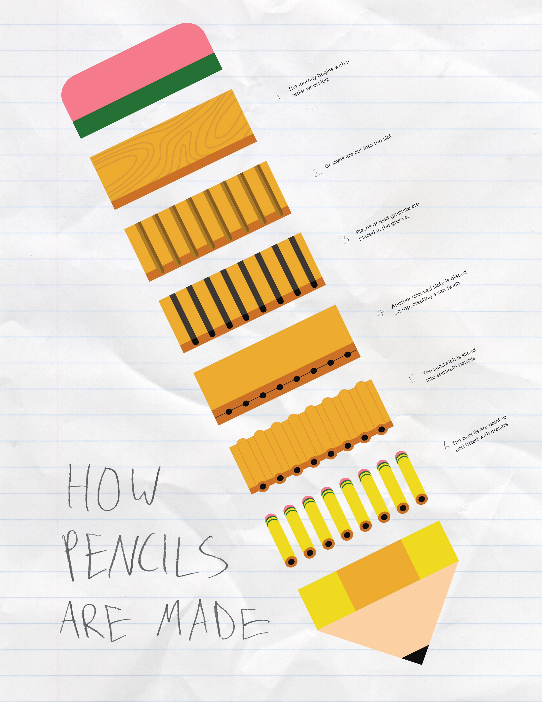
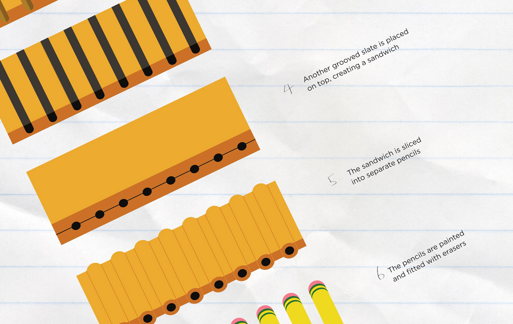
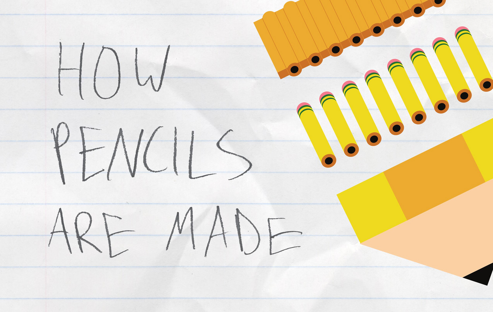

This poster is a visual diagram, explaining the process of how pencils are made. I desgined the poster with the intention that it was visually interesting from multiple distances of viewing, which is why I decided to make the individual steps composed into a larger image of a pencil. Overall the process of creating the poster was a good lesson of what makes visual language legible, as well as how even the most mundane everyday items have interesting stories.
  